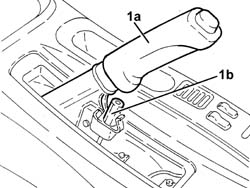
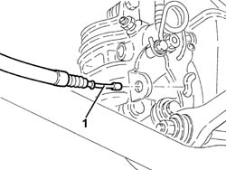
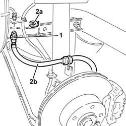
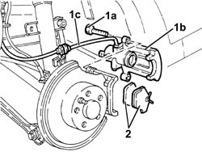
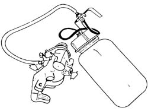
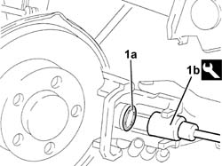

3310B36 rear brake calliper - r r
- Path
- Procedures > 33 BRAKING SYSTEM > 3310 DISC BRAKES > 3310B REAR DISC BRAKES > 3310B36 rear brake calliper - r r
- Kind
- repair procedure (removal / refitting; the operation number is the code)
- Applies to
- all engines; all production periods
- Interactive page
- https://sloeber94.github.io/elrnDB-a156/en/#/3238045
Applies to: all engines; all production periods
 Removing
Removing
 Refitting
RefittingPosition the vehicle on the ramp.
Remove the handbrake boot.
1. Lift up the handbrake lever (1a) and loosen the nut (1b) tensioning the handbrake cables.

Applies to: all engines; all production periods
4450B11 WHEEL (one) rear - R.R.
1. Disconnect the handbrake cable from the rear brake caliper.

Applies to: all engines; all production periods
1. Undo the hose intermediate connector.
2. Remove the clip (2a) and disconnect hose (2b) from the mounting bracket.

Applies to: all engines; all production periods
1. Undo the bolts (1a) and remove the rear brake caliper (1b) complete with hose 1c).
2. Remove the brake pads.

Applies to: all engines; all production periods
Refitting
Removing
Applies to: all engines; all production periods
1. - Compress the rear brake caliper piston (1a) using the tool (1b) to facilitate the refitting of the brake caliper.
 | Name | Country |
|---|---|---|
1b | Key | 1.822.108.000 |

Applies to: all engines; all production periods
Fit the rear brake caliper complete with pads and flexible pipe and secure by tightening the bolts to the specified torque.
 | Fastening | Component | Ø | Value (daNm) |
|---|---|---|---|---|
- | Bolt | REAR BRAKE CALIPER | M10 | 4.8 - 5.2 |
Connect the hose to the mounting bracket and secure it using the clip.
Tighten the intermediate hose connector to torque.
| Fastening | Component | Ø | Value (daNm) |
|---|---|---|---|---|
- | Connector | HOSE TO REAR BRAKE CALIPER | M10 | 1.3 - 1.5 |
Connect the handbrake cable to the rear brake caliper.
4450B11 WHEEL (one) rear - R.R.
3380A04 handbrake - check travel
3330A14 HYDRAULIC BRAKING SYSTEM - Bleed air
3330A10 BRAKE FLUID - Check level and top up, if necessary.
Remove the car from the ramp.
Topics linked from this page (4)
- 3330A10 BRAKE FLUID - Check level and top up, if necessary.
- 3330A14 HYDRAULIC BRAKING SYSTEM - Bleed air
- 3380A04 handbrake - check travel
- 4450B11 WHEEL (one) rear - R.R.